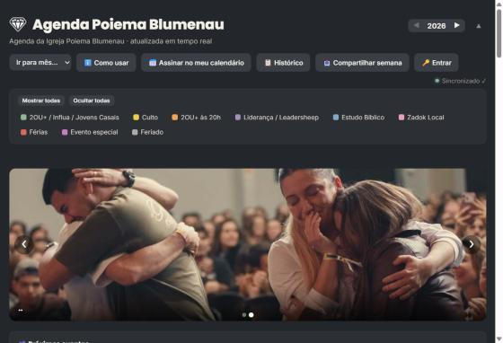
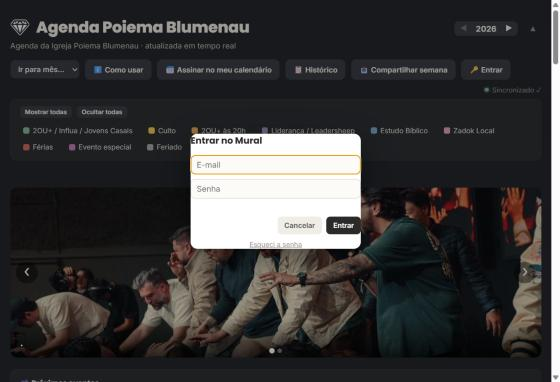
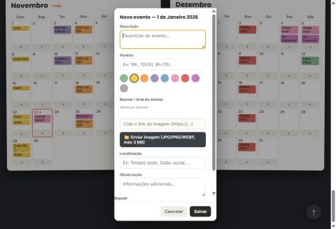
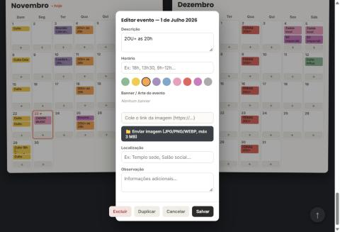
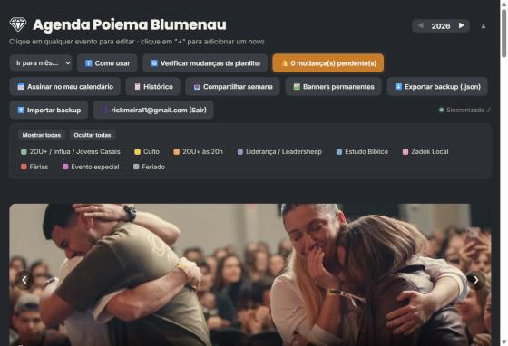
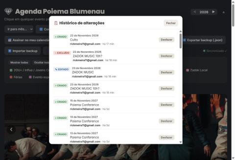

Visão geral
O Mural é a agenda viva da Poiema Blumenau — todos os eventos do ano em um só lugar, atualizada em tempo real para qualquer pessoa com o link.
Quem vê o quê: qualquer visitante vê o calendário. Só editores logados podem criar ou alterar eventos.
Como navegar:
- Use ◀ 2026 ▶ (ao lado do título) para trocar de ano.
- Use "Ir para mês…" na barra de ferramentas para pular diretamente a um mês.
- Role a página para ver todos os meses em sequência.
- O dia de hoje aparece com destaque e ponto vermelho.

Entrar como editor
Clique em "🔑 Entrar" na barra de ferramentas.
Primeiro acesso:
- Você recebeu um convite por e-mail.
- Clique no link do e-mail.
- Defina seu nome e senha.
- Pronto — você é editor.
Próximas vezes: no mesmo aparelho/navegador, entra automaticamente. Em outro aparelho, informe e-mail e senha.
Se você ainda não recebeu convite, fale com o responsável para ser convidado.

Criar um evento
Clique no "+" do dia desejado (aparece só para editores logados).
Preencha o formulário:
- Descrição — nome do evento
- Horário — ex:
18h,9h–12h,13h30 - Categoria / Cor — selecione uma das bolinhas coloridas
- Localização — opcional, ex: "Templo sede"
- Observação — informações adicionais opcionais
- Arte / Banner — envie imagem (JPG/PNG/WEBP, até 3 MB) ou cole um link
Clique Salvar. O evento aparece na hora para todos em tempo real.

Evento recorrente
Ao criar um evento, use a seção "Repetir" para criar uma série:
- Semanal — a cada 7 dias
- Quinzenal — a cada 14 dias
- Mensal — mesmo dia todo mês
Defina a data de fim da série. O sistema cria todos os eventos automaticamente de uma vez.
Editar, mover e duplicar
Editar: clique no evento → faça as alterações → Salvar. Se for recorrente, ele pergunta "só este ou toda a série?".
Mover (arrastar): clique e segure o card por ~400ms (mobile) ou arraste diretamente (desktop) para outro dia. O sistema pede confirmação antes de aplicar.
Duplicar: no editor do evento, clique em "Duplicar" e escolha a nova data. Há um atalho "+1 semana" para facilitar.

Excluir
No editor do evento, clique em "Excluir" (botão vermelho, canto inferior esquerdo).
Se for um evento recorrente, o sistema pergunta:
- "Só este" — remove apenas este evento da série
- "Toda a série" — remove todos os eventos (informa quantos serão apagados antes de confirmar)
Banners / artes
No editor do evento, seção "Banner / Arte do evento":
- Envie uma imagem (JPG/PNG/WEBP, até 3 MB) clicando em "📁 Enviar imagem"
- Ou cole o link de uma imagem já hospedada (começando com
https://)
Artes de eventos futuros aparecem automaticamente no carrossel do topo, alternando sozinhas. Quando a data do evento passa, o banner sai do carrossel.
Para banners institucionais sem data de expiração (ex: um banner da igreja sempre ativo), use "🖼️ Banners permanentes" na barra de ferramentas.

Histórico e desfazer
Clique em "📋 Histórico" na barra de ferramentas para ver todas as alterações — quem fez, o quê e quando.
Cada entrada tem um botão "Desfazer" que reverte aquela ação específica.

Sincronização com a planilha
O mural pode ser comparado com a planilha oficial clicando em "🔄 Verificar mudanças da planilha".
As diferenças encontradas aparecem como propostas — nada muda sozinho. Um editor revisa cada proposta e aprova ou rejeita.
Quando há propostas aguardando, o botão "🔔 mudança(s) pendente(s)" aparece na barra de ferramentas.
Compartilhar e assinar
"📅 Assinar no meu calendário" — coloca os eventos no Google Agenda, Apple Calendar ou Outlook da pessoa, sempre atualizados automaticamente. Funciona para qualquer visitante, não só editores.
"📤 Compartilhar semana" — gera um texto pronto com os eventos da semana, fácil de colar no WhatsApp ou outros aplicativos.
"⬇️ Exportar backup" — baixa uma cópia de segurança completa dos eventos em formato .json. Use periodicamente para guardar histórico.
Dicas e cuidados
- Mudanças são em tempo real e afetam todo mundo — confira antes de salvar.
- Aprovar propostas da planilha e importar backup afetam todos: use com cuidado.
- Filtrar categorias (botões "Mostrar todas / Ocultar todas" na legenda) muda só a sua visualização, não afeta os outros usuários.
- Para recolher o menu de ferramentas e ter mais espaço na tela, clique no ▲ ao lado do título.
- Dias com mais de 2 eventos mostram um botão "+N mais" — clique para ver a lista completa do dia.
- O link do mural: calendariopoiema.vercel.app